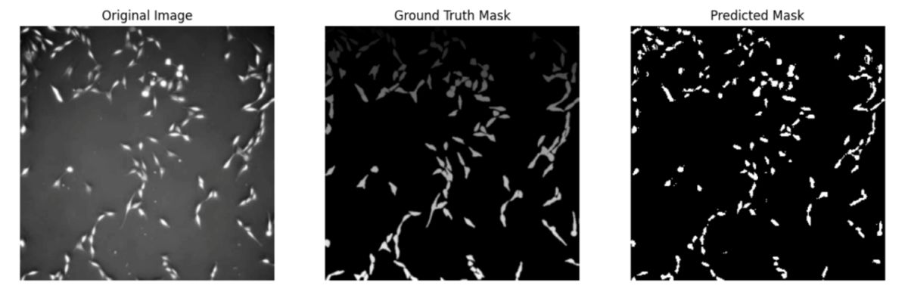
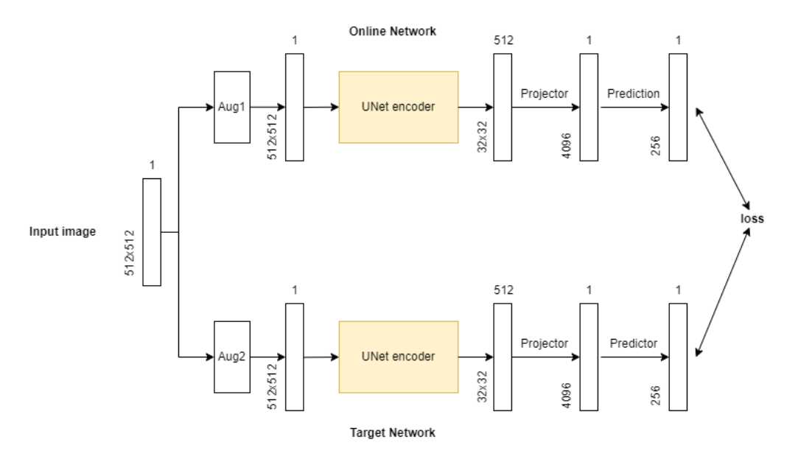
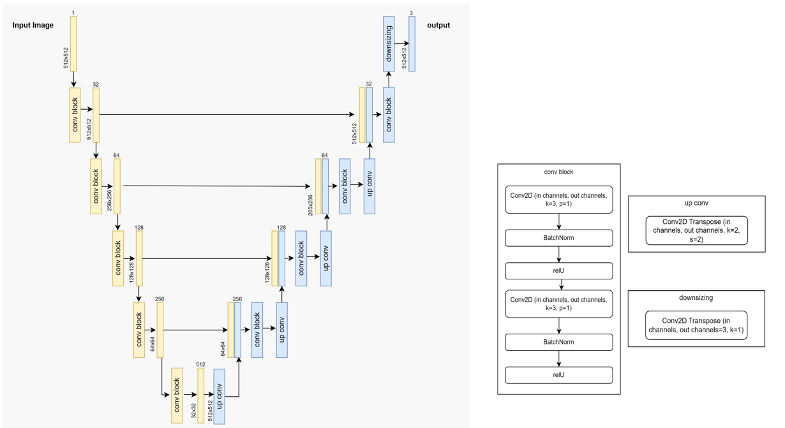
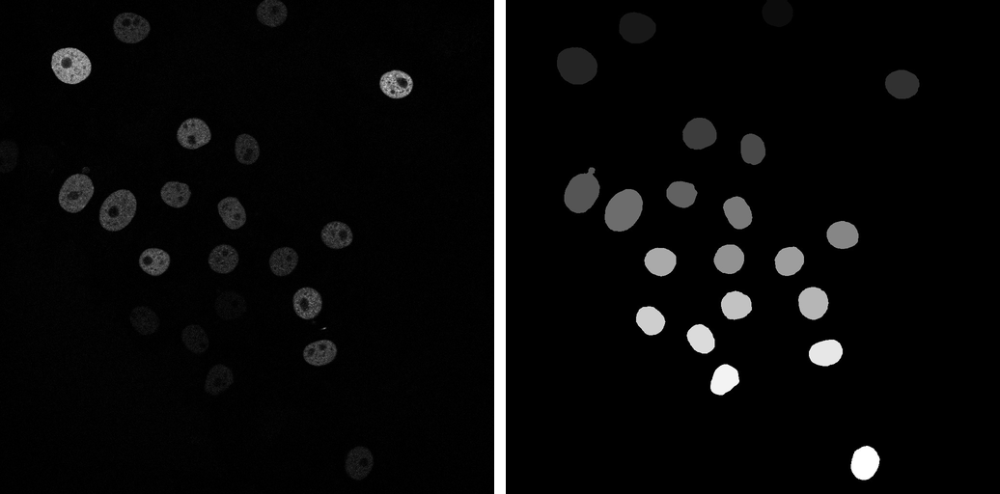
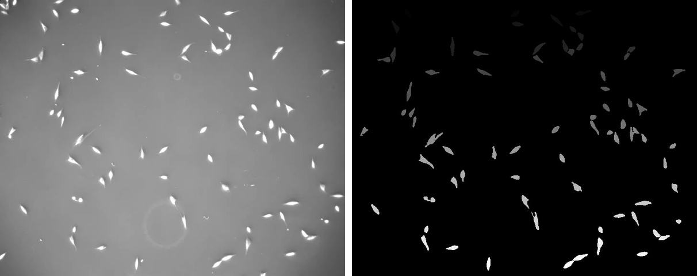
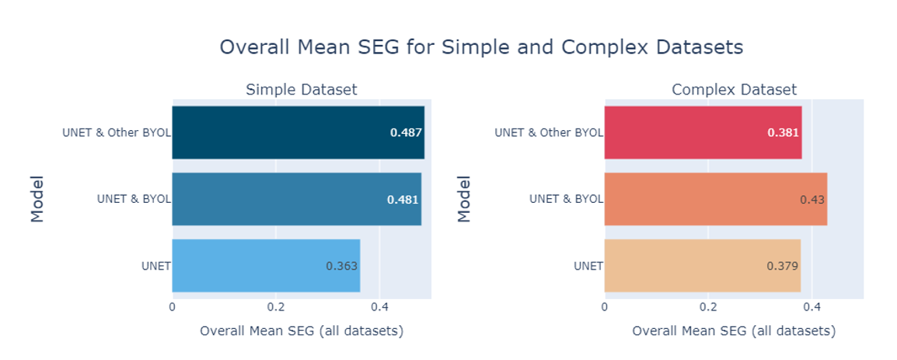
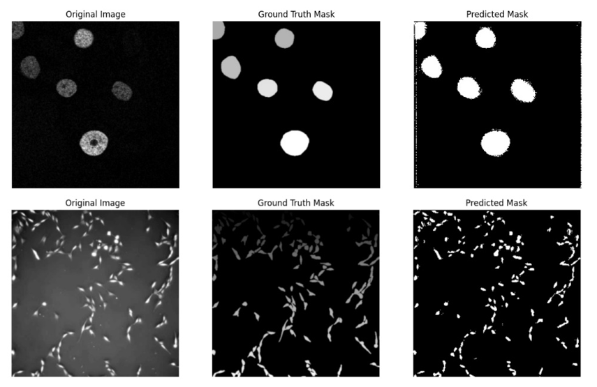

PhC-C2DL-PSC, the harder of the two datasets.The UNet encoder is pretrained with BYOL on unlabeled cell images. No annotations, no negative pairs, no contrastive sampling.
Up to +12.4% mean SEG over the supervised baseline, and the margin is widest at the smallest training set.
An encoder pretrained on a harder, visually unrelated dataset outperformed same-dataset pretraining on the simpler task.
Segmenting cell images is difficult: shapes, sizes and textures vary enormously, and labeled datasets are scarce because annotation demands expert time. We explored whether self-supervised pretraining can compensate for that shortage. We pretrain a UNet encoder with BYOL on unlabeled images, then fine-tune the full network in a supervised setting to predict three classes per pixel: background, cell interior, and cell edge. Explicitly modelling the edge class is what keeps touching cells apart rather than merging them into one blob. Across two datasets from the Cell Tracking Challenge and four training-set sizes, the self-supervised approach improved segmentation on every dataset. We also found that pretraining on a different dataset can, in some cases, improve results further than pretraining on the target dataset itself.
Stage 1. Self-supervised pretraining. Each unlabeled image is augmented twice and the two views pass through an online network and a target network. The online branch adds a projector and a predictor and is updated by gradient descent; the target branch is updated only by an exponential moving average of the online weights, at decay 0.99. The loss simply asks each branch to predict the other's representation.

Stage 2. Supervised fine-tuning. The pretrained weights are loaded into a full UNet and trained with a weighted cross-entropy loss. The encoder stays frozen for the first two-thirds of training so the gradient budget goes into the decoder, then it is unfrozen for the final third. Input is 512×512×1, the bottleneck is 32×32×512, and the output is 512×512×3, one channel per class.

Two 2D datasets from the Cell Tracking Challenge, chosen to differ sharply in difficulty. Fluo-N2DH-GOWT1 holds well-separated fluorescent nuclei on a dark background. PhC-C2DL-PSC holds many small, elongated, densely packed phase-contrast cells. Both were cut into 512×512 patches, and binary masks were converted on the fly into the background / inside / edge encoding.

Fluo-N2DH-GOWT1, the simple dataset.
PhC-C2DL-PSC, the complex dataset.Three variants were trained on four training-set sizes for each dataset: a plain supervised UNet, UNet & BYOL with an encoder pretrained on the same dataset, and UNet & Other BYOL with an encoder pretrained on the other dataset. Scores use SEG, the Cell Tracking Challenge metric, which is the mean Jaccard index over reference objects and penalizes merged cells heavily.
Simple — Fluo-N2DH-GOWT1 |
Complex — PhC-C2DL-PSC |
|||||
|---|---|---|---|---|---|---|
| Train size | UNet | + BYOL | + Other BYOL | UNet | + BYOL | + Other BYOL |
| 50 | 0.32 | 0.41 | 0.53 | 0.16 | 0.31 | 0.23 |
| 100 | 0.52 | 0.60 | 0.63 | 0.49 | 0.49 | 0.45 |
| 250 | 0.38 | 0.59 | 0.49 | 0.39 | 0.45 | 0.35 |
| 500 | 0.24 | 0.32 | 0.29 | 0.47 | 0.47 | 0.50 |
| Overall mean | 0.363 | 0.481 | 0.487 | 0.379 | 0.430 | 0.381 |


Post-processing the predicted edge class involves a real trade-off. Rendering it white merges each cell with its own boundary and raises the SEG score, but neighbouring cells visually run together. Rendering it black draws a one-pixel gutter around every cell, which looks cleaner and separates touching cells far better, at the cost of a slightly lower score.